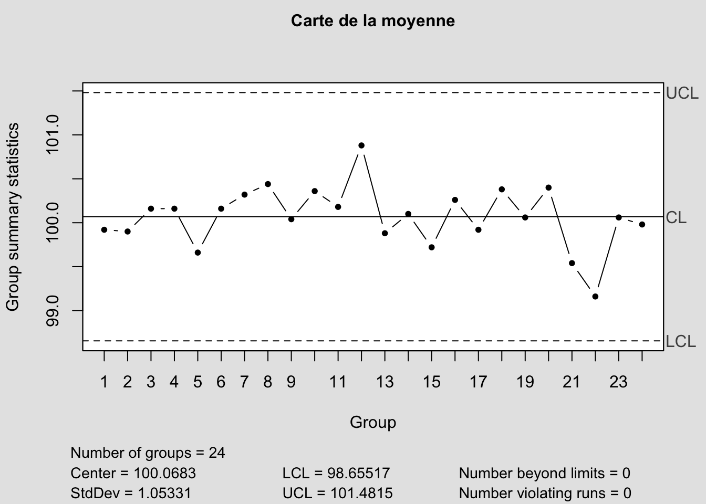

| X | weight.1 | weight.2 | weight.3 | weight.4 | weight.5 |
|---|---|---|---|---|---|
| 1 | 98.6 | 100.3 | 100.9 | 100.2 | 99.6 |
| 2 | 100.3 | 99.5 | 98.9 | 100.2 | 100.6 |
| 3 | 99.2 | 98.8 | 101.5 | 100.3 | 101.0 |
| 4 | 101.1 | 97.8 | 98.9 | 101.3 | 101.7 |
| 5 | 101.0 | 99.8 | 97.3 | 99.4 | 100.8 |
| 6 | 101.1 | 100.1 | 99.0 | 100.7 | 99.9 |
4 Cartes de contrôles de Shewhart
4.1 Principe
On va construire deux graphiques : une carte dite de position et une carte de dispersion.
Exemple
Suivi de production journalière de steacks hachés surgelés durant 12h de production. Chaque heure on prélève 5 steaks et on les pèse.
Les données sont disponibles ici
df<-data[,-1]
## Carte de la moyenne avec la librairie qcc dans R
X<-qcc(df,type="xbar",title="Carte de la moyenne")
## Carte de l'étendue avec la librairie qcc dans R
X<-qcc(df,type="R",title="Carte de l'étendue")
Pour chaque échantillon de 5 steacks on calcule la moyenne et l’étendue et on les reporte sur les cartes correspondantes.
4.2 Distribution des paramètres
On suppose que tous les paramètres suivent une loi normale.
La moyenne d’un échantillon \(\bar X \sim \mathcal N(\mu,\frac{\sigma}{\sqrt n}).\)
L’étendue d’un échantillon \(R \sim \mathcal N(\mu_R,\sigma_R).\)
L’écart type d’un échantillon \(S \sim \mathcal N(\mu_S,\sigma_S).\)
On définit alors les limites de surveillance et de contrôle pour chaque carte. Pour la carte de la moyenne :
On se fixe un risque \(\alpha\) de stoper la production alors que celle-ci est sous contrôle (Fausses alertes). On cherche donc un intervalle de confiance \(1-\alpha\) de \(\bar X\) La distribution des moyennes étant normale on a
\[ \begin{cases} LI=\mu-z_{1-\alpha/2}\frac{\sigma}{\sqrt n} \\ LS=\mu+z_{1-\alpha/2}\frac{\sigma}{\sqrt n} \\ \mathbb P(LI<\bar X<LS)=1-\alpha \end{cases} \]
On pourra en conclure que la moyenne \(\bar X\) de l’échantillon considéré n’est pas significativement différente de la moyenne \(\mu\) (c’est à dire que le procédé est sous contrôle) si \(\bar X \in [LI,LS].\)
Les limites de surveillance sont définies de façon à déterminer, au risque de 4.5%, les moyennes significativement différentes de la moyenne globale :
Limite inférieure de surveillance (LIS): \(LIS=\mu-2\frac{\sigma}{\sqrt n}\)
Limite supérieure de surveillance (LSS): \(LSS=\mu+2\frac{\sigma}{\sqrt n}\)
Les limites de contrôle sont définies de façon à déterminer, au risque de 0.3% de fausses alertes, les moyennes significativement différentes de la moyenne globale :
Limite inférieure de contrôle (LIC): \(LIC=\mu-3\frac{\sigma}{\sqrt n}\)
Limite supérieure de contrôle (LSC): \(LSC=\mu+3\frac{\sigma}{\sqrt n}\)
4.3 Estimation des limites de contrôle pour la carte de la moyenne.
Reprenons le cas précédent. Pour chaque échantillon on peut calculer \(\bar y_j,R_j\) la moyenne et l’étendue.
On a vu dans le chapitre précédent que \(\hat\mu=\overline{\overline{y}}=\frac 1{k} \displaystyle\sum_{j=1}^k \bar y_{j}\) et que \(\hat \sigma = \dfrac{\bar R}{d_2}\). Donc on a : \[ \begin{cases} \widehat{LIC}= \bar{\bar{y}}-\frac{3}{\sqrt n} \frac{\overline R}{d_2} \\ \widehat{LSC}= \bar{\bar{y}}+\frac{3}{\sqrt n} \frac{\overline R}{d_2} \end{cases} \]
4.4 Estimation des limites de contrôle pour la carte des étendues
Pour l’estimation de \(\mu_R\) on prend \(\hat\mu_R=\bar R\), et pour l’estimation de \(\sigma_R\) on prend \(\hat \sigma_R=\frac{d_3}{d_2}\bar R\) où \(d_3\) est l’écart type des étendues d’une loi normale centrée réduite. On a alors
\[ \begin{cases} \widehat{LIC}= \overline{R}-3\frac{d_3}{d_2}\overline R \\ \widehat{LSC}= \overline{R}+3\frac{d_3}{d_2}\overline R \end{cases} \] ## Estimation des limites de contrôle pour la carte des écarts types
Pour l’estimation de \(\mu_S\) on prend \(\hat\mu_S=\bar S\), et pour l’estimation de \(\sigma_S\) on prend \(\hat \sigma_S=\frac{\sqrt{1-c_4^2}}{c_4}\bar S\). On a alors :
\[ \begin{cases} \widehat{LIC}= \overline{S}-3\frac{\sqrt{1-c_4^2}}{c_4}\overline S \\ \widehat{LSC}= \overline{S}+3\frac{\sqrt{1-c_4^2}}{c_4}\overline S \end{cases} \]
4.5 Retour sur l’exemple :
| M | R | S |
|---|---|---|
| 99.92 | 2.3 | 0.61 |
| 99.90 | 1.7 | 0.38 |
| 100.16 | 2.7 | 1.06 |
| 100.16 | 3.9 | 2.34 |
| 99.66 | 3.7 | 1.75 |
| 100.16 | 2.1 | 0.52 |
Pour l’estimation de \(\sigma\) on obtient
0.9666943 avec la moyenne des étendues et 0.9951602
Donc ces deux valeurs sont proches.